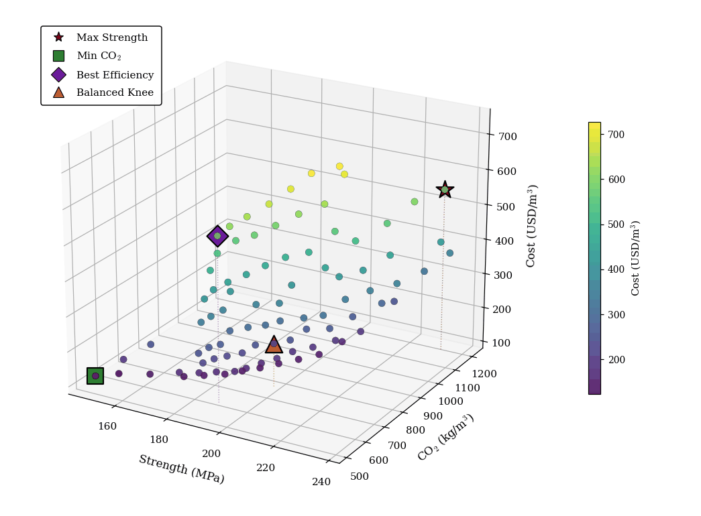

Predicting the 28-day compressive strength ($f_c$) of fiber-reinforced ultra-high performance concrete (UHPC) from its mix design remains challenging due to the complex interactions among binder chemistry, fiber reinforcement, aggregate packing, and curing regime. This paper proposes CompMoE-CFI, a compositional mixture-of-experts neural network that decomposes UHPC features into five physically meaningful subsystems and introduces three novel mechanisms: (1) Compositional Attention Gating (CAG), which applies multi-head cross-attention over subsystem embeddings to produce soft expert routing; (2) Physics-Informed Residual Path (PIRP), a learnable linear skip connection that separates near-linear Abrams-law-like behavior from nonlinear interactions; and (3) Hierarchical Expert Diversity (HED), which mixes linear, shallow, and residual experts to match varying compositional complexity. On a cleaned dataset of 1,216 fiber-reinforced UHPC mixes ($f_c \geq 100$ MPa) compiled from approximately 130 published studies, CompMoE-CFI achieves $R^2 = 0.895$ (5-seed, 25-evaluation cross-validation) and a production-ensemble $R^2 = 0.961$ with MAE $= 4.48$ MPa. The trained surrogate is coupled with NSGA-III to generate 90 Pareto-optimal mix designs trading off strength, embodied CO$_2$, and material cost, achieving up to 55% CO$_2$ reduction relative to the dataset mean while maintaining UHPC-class strength.

CompMoE-CFI processes 31 engineered features organized into five compositional subsystems (Binder, Fiber, Aggregate, Environment, Testing). Each subsystem is encoded into a fixed-dimension embedding, and cross-subsystem multi-head attention produces gating weights over $K = 5$ heterogeneous experts:
Compositional Attention Gating (CAG) — Per-subsystem encoders feed multi-head self-attention across all five subsystems. The attended embeddings are concatenated, projected, and passed through a softmax with learnable temperature to produce expert routing weights $g_1, \ldots, g_K$.
Hierarchical Expert Diversity (HED) — Expert 0 is a single linear layer; Experts 1–2 are shallow-wide networks (one hidden layer); Experts 3–4 are two-block residual networks with BatchNorm and GELU. The gating network learns to route simple mixes to simple experts and complex mixes to deeper ones.
Physics-Informed Residual Path (PIRP) — A parallel linear prediction $\hat{y}_{\text{lin}} = \mathbf{w}^\top \mathbf{x} + b$ is combined with the MoE output via a learnable scalar $\alpha$: $\hat{y} = \alpha\, \hat{y}_{\text{lin}} + (1 - \alpha)\, \hat{y}_{\text{MoE}}$. At convergence, $\alpha \approx 0.57$, meaning 57% of the prediction comes from the linear path.
The production CompMoE-CFI ensemble ($R^2 = 0.961$, MAE $= 4.48$ MPa) serves as a differentiable surrogate for NSGA-III multi-objective optimization across three objectives: maximize $f_c$, minimize embodied CO$_2$, and minimize material cost.
Adjust mix proportions and predict the 28-day compressive strength, embodied CO2, and material cost using the CompMoE-CFI 5-model production ensemble.
Mix design inputs
@article{wakjira2026compmoe,
title = {Compositional Mixture-of-Experts Neural Network for
Compressive Strength Prediction and Sustainable Mix
Optimization of Fiber-Reinforced Ultra-High Performance
Concrete},
author = {Wakjira, Tadesse G. and Goshu, Hana L.},
year = {2026},
}